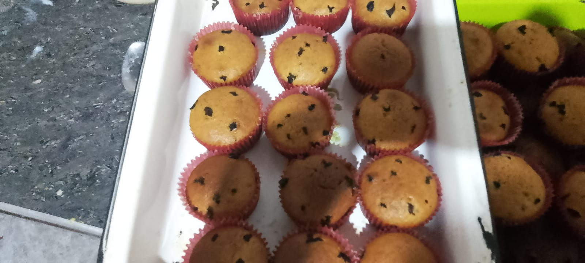
Cupcakes de cushuro
Pequeño pastel elaborado con cushuro, harina y otros ingredientes de repostería. Suave, esponjoso y práctico para disfrutar como snack.
Presentación: unidad individual Pedir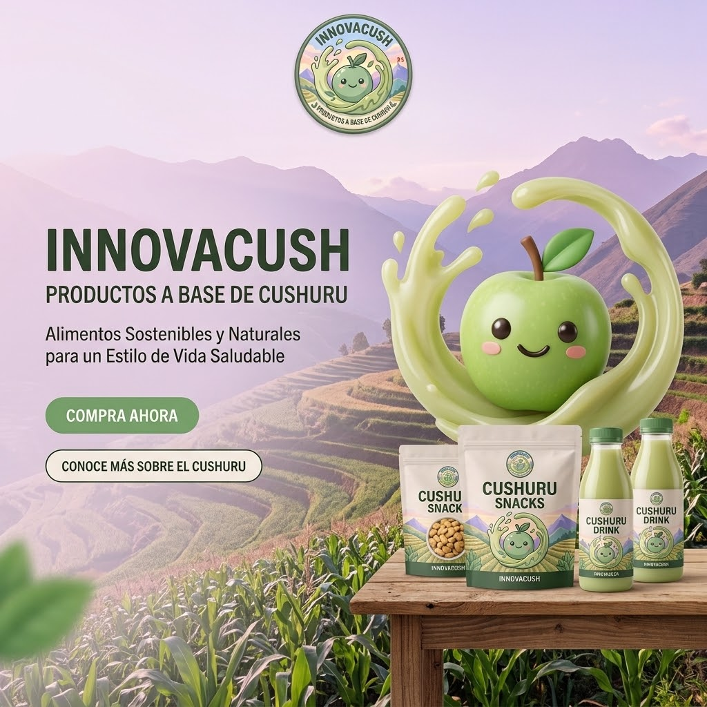
Descubre INNOVACUSH, productos innovadores y nutritivos elaborados a base de cushuro, desde Cangallo, Ayacucho.
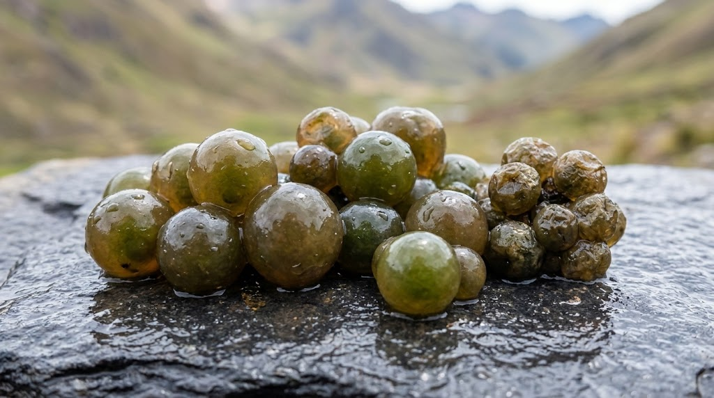
AndesEl cushuro es un alimento andino que forma parte de los recursos de nuestra región. En INNOVACUSH buscamos darle un nuevo valor, transformándolo en productos innovadores y atractivos.
Nuestros productos incorporan cushuro, un alimento andino que aporta proteínas, hierro, calcio y otros minerales.
Un aporte natural del cushuro en cada preparación.
Presente como parte de la riqueza nutricional del cushuro.
Un mineral que el cushuro andino aporta de forma natural.
Otros minerales propios de nuestros alimentos andinos.
Elaborados artesanalmente desde Cangallo, Ayacucho. Pedidos por unidad y cantidades mayores según disponibilidad.

Pequeño pastel elaborado con cushuro, harina y otros ingredientes de repostería. Suave, esponjoso y práctico para disfrutar como snack.
Presentación: unidad individual Pedir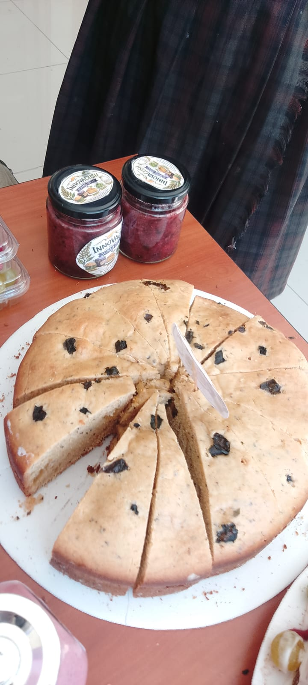
Bizcocho suave elaborado con cushuro e ingredientes de repostería, pensado para ofrecer una alternativa nutritiva y diferente.
Presentación: porción individual Pedir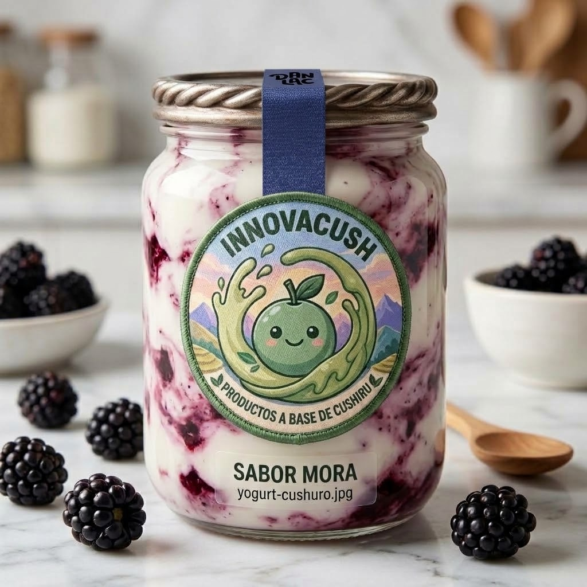
Yogurt preparado con cushuro y una base láctea, con una textura cremosa y sabor agradable.
Presentación: botella individual Pedir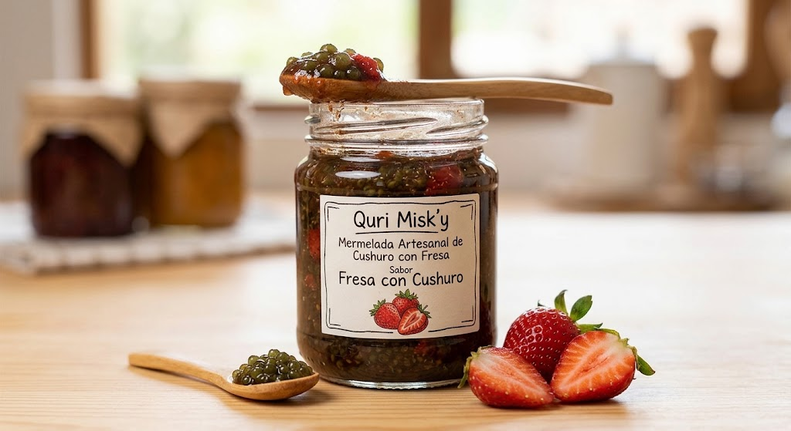
Preparación dulce a base de cushuro, combinada con ingredientes que aportan sabor y textura. Ideal para acompañar panes y postres.
Presentación: frasco pequeño Pedir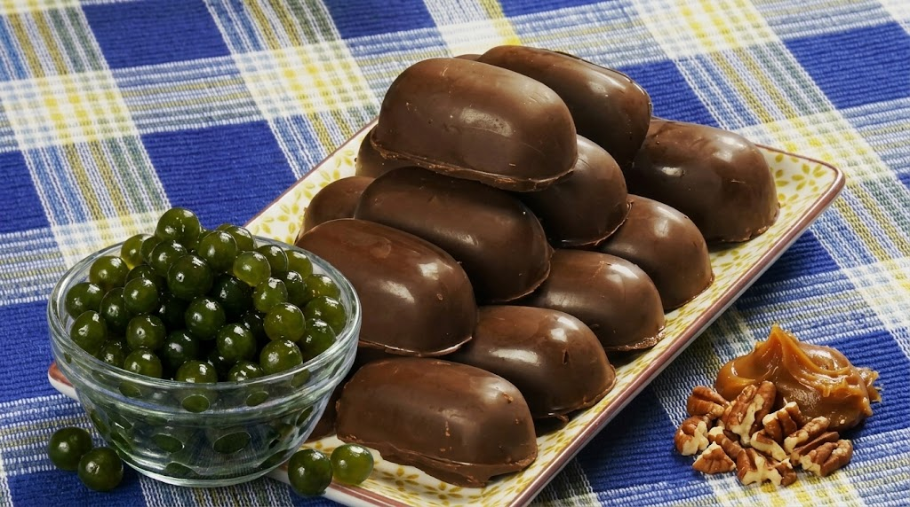
Dulce elaborado con cobertura de chocolate y un relleno innovador que incorpora cushuro.
Presentación: unidad individual PedirEscríbenos y te ayudamos a armar tu pedido de productos de cushuro.
EscríbenosINNOVACUSH nació en Cangallo, Ayacucho, al descubrir el gran potencial del cushuro, un alimento andino con importantes nutrientes. Nos preguntamos cómo podíamos darle un nuevo valor y hacerlo más atractivo para nuestra comunidad.
Así surgió la idea de crear productos innovadores como queques, cupcakes, yogurt, mermeladas y chocotejas, demostrando que nuestros recursos andinos pueden convertirse en oportunidades de alimentación, innovación y emprendimiento.
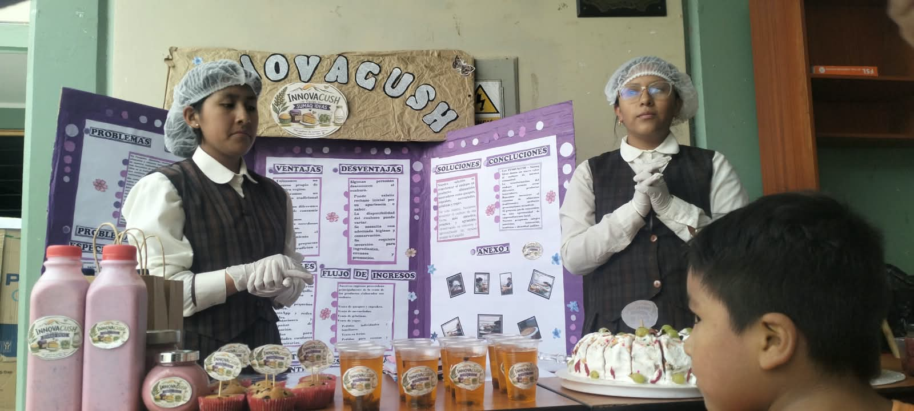
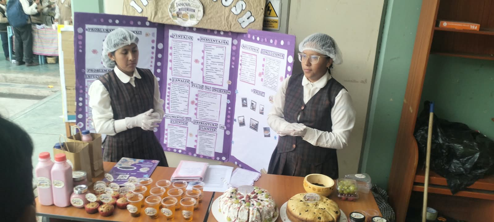
Nuestra tierra, Ayacucho.
El alimento andino que impulsa la marca.
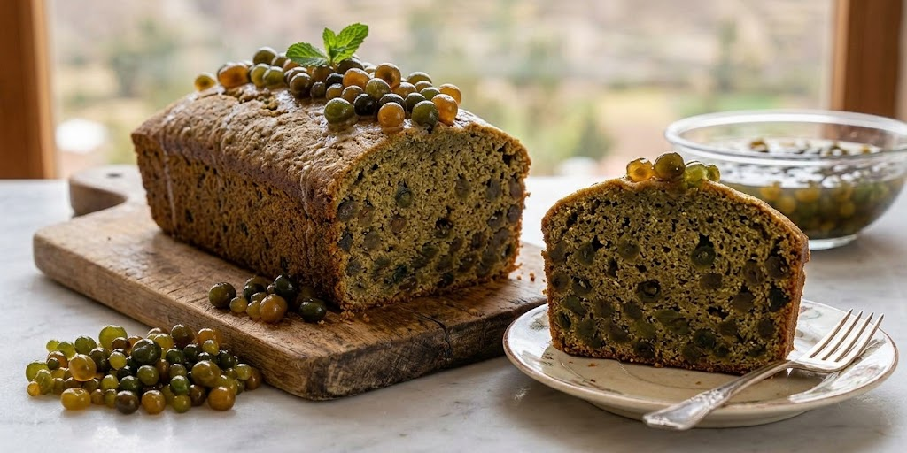
Ideas nuevas sobre una base tradicional.
De la naturaleza a tu mesa.
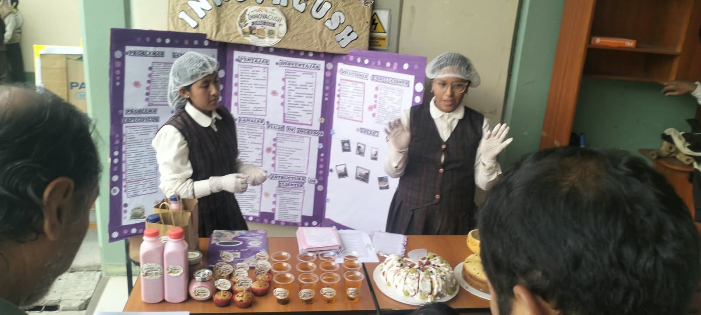
INNOVACUSH nació de la idea de revalorar el cushuro, un alimento andino, y transformarlo en productos innovadores y atractivos. Nuestro equipo fundador está conformado por cinco estudiantes de Cangallo, Ayacucho.
Encargada de organizar al equipo, coordinar las actividades y participar en la investigación y presentación del emprendimiento.
Participa en la investigación sobre el cushuro y en el desarrollo y mejora de los productos.
Apoya en la elaboración de los productos, cuidando su presentación, calidad e innovación.
Encargado de apoyar en la promoción de INNOVACUSH, creación de contenido y difusión de los productos.
Apoya en la comercialización, comunicación con los clientes y presentación de los productos.
Revalorar el cushuro como alimento andino, transformándolo en productos innovadores, nutritivos y atractivos que promuevan una alimentación saludable y el aprovechamiento sostenible de los recursos de nuestra comunidad de Cangallo, Ayacucho.
Ser una iniciativa reconocida en Cangallo y Ayacucho por transformar el cushuro en productos innovadores y nutritivos, promoviendo el valor de nuestros alimentos andinos y llevando nuestra propuesta a más comunidades y mercados.
INNOVACUSH transforma un alimento andino tradicional como el cushuro en productos innovadores, nutritivos y atractivos.
Explora nuestros productos.
Consulta disponibilidad y precios por WhatsApp o redes sociales.
Coordina con nuestro equipo la entrega.
Actualmente realizamos entregas principalmente en Cangallo, Ayacucho.
Atendemos pedidos por unidad y también por cantidades mayores, según disponibilidad.
Los precios pueden variar según el producto y su presentación.
Consultar por WhatsAppAceptamos Yape y efectivo para facilitar la compra de nuestros productos.
Realiza tu pedido o escríbenos para conocer nuestros productos y precios.
Pedir por WhatsAppActualmente, INNOVACUSH funciona como una tienda virtual y realizamos nuestros pedidos y entregas principalmente en Cangallo, Ayacucho.